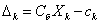
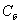
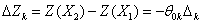
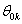
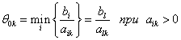

ПРИМЕР:
Решить симплексным методом
Решение: Приводим задачу к каноническому виду. Для Этого в левую часть второго и третьего ограничений-неравенств типа "" вводим дополнительные переменные и с коэффициентом +1.
В целевую функцию и входят с коэффициентом 0 (т.е. не входят). Получаем
Система ограничений этой задачи является системой уравнений, разрешенной относительно переменных , , .
Свободные (неразрешённые) переменные приравниваем к нулю: . Получаем . Записываем базисное решение , которое является начальным опорным решением с базисом .
По формуле  вычисляем оценки разложежений векторов условий по базису опорного решения:
Опорное решение, коэффициенты разложений и оценки векторов условий по базису опорного решения записываются в симплексную таблицу (Таблица 2).
Таблица 2.

В первом столбце "Б" записываются векторы, входящие в базис опорного решения. Порядок записи этих векторов соответствует номерам разрешённых неизвестных в уравнениях-ограничениях.
Во втором столбце таблицы "" записываются коэффициенты целевой функции при базисных переменных в том же порядке. При правильном расположении коэффициентов целевой функции в столбце ""
оценки единичных векторов входящих в базис, всегда равны нулю. В последней строке таблицы с оценками  в столбце "" записывается значение целевой функции на опорном решении
в столбце "" записывается значение целевой функции на опорном решении  .
.
Начальная опорное решение не является оптимальным, так как в рассматриваемой задаче на максимум векторам соответствует отрицательные оценки (не выполняется признак оптимальности).
В данном случае можно найти новое опорное решение, на котором значение целевой функции будет больше. Определим, введение такого из трёх векторов приведёт к большему приращению целевой функции. Приращение целевой функции находится
по формуле . Вычисляем значение параметра  для первого второго и третьего векторов по формуле .
Получаем (см. таб. 2). Находим возможные приращения целевой функции при введении в базе с каждого из этих векторов и определяем наибольшее из них:
Следовательно, для более быстрого приближения к оптимальному решению необходимо ввести в базис опорного решения либо вектор либо вектор .
Вводим в базе с вектор .
Так как минимальное значение достигается при то исключаем из базиса третьей вектор .
За разрешающий элемент принимаем число 2 расположенное в первом столбце и третьей строке. Выполняем преобразование Жордана с элементом равным .
Получаем второе опорное решение с базисом (таблица 3).
Таблица 3.

Это решение не является оптимальным, так как векторы А2 и А3 имеют отрицательыне оценки -1 , -2. Определим, введение какого из векторов в базис опорного решения приведет к большему приращению целевой функции:
Вводим в базис вектор А2. Минимальное значение параметра Q02 = 2 имеет место при l = 1, поэтому разрешающий элемент берем в первой строке. Из базиса исключаем вектор А4. Выполняем преобразование Жордана с элементом.
Получаем третье опорное решение Х3 =(4,2,0,0,2,0) с базисом Б3 = (A2,A5,F1), Z(X3)=6. (таблица 4).
Таблица 4.

Опорное решение Х3 является оптимальным, так как для всех векторов условий оценки в задаче на максимум неотрицательные. Однако данное решение не единственное, так как вектор А6, не входящий в базис, имеет нулевую оценку.
Этот вектор нужно ввести в базе с опорного решения, чтобы получить ещё одно оптимальное решение. Вектор выводимый из базиса находим с помощью параметра Q6.Так как Q06 = min{2,4} = 2, разрешающий элемент для следующего преобразования Жордана берём во второй строке/
В базис сходит вектор А6 вместо вектора А5. Получаем второе оптимальное решение Х4 = (2,4,0,0,0,2) с базисом Б4 = (А2,А6,А1), Z(X4) = 6. (таблица 5)
Таблица 5.

Исходная задача имела четыре переменные Поэтому в ответе в оптимальным решении последние две дополнительные переменные не записываем.
Ответ: